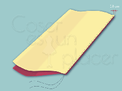
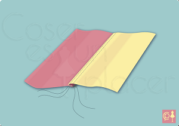
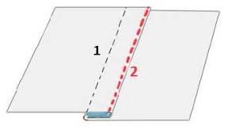
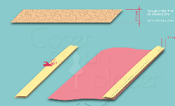
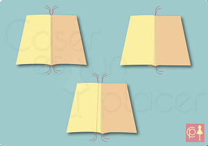

HOLA! BIENVENIDOS A MI PAGINA WEB DE COSTURAS EN DONDE APRENDERAS LOS DIFERENTES TIPOS DE CORTES Y COSTURAS QUE SON LOS MAS UTILIZADOS.
¡PRIMERO!¿QUE SON LAS COSTURAS?
ARLETTE GUADALUPE ARRONIZ CARRO GRUPO 634
LA COSTURA ES EL MÉTODO POR EL CUAL SE UNEN DOS O MÁS TELAS AL PERFORARLAS Y ENTRELAZAR UN HILO A TRAVÉS DE ELLAS, NORMALMENTE CON AYUDA DE UNA AGUJA. TAMBIÉN PUEDE USARSE PARA UNIR PIELES, LONA U OTROS MATERIALES FLEXIBLES.
¿CUALES SON LOS TIPOS DE COSTURAS MAS UTILIZADOS?
COSTURA SUPERPUESTA

PARA CREARLA SE UNEN DOS O MÁS TELAS, SUPERPONIÉNDOLAS. PUEDEN UNIRSE MEDIANTE UNA O MÁS FILAS DE PUNTAS. SE USA PRINCIPALMENTE EN DETALLES DECORATIVOS, O DETALLES FUNCIONALES COMO LOS CUELLOS, TAPETES, PUÑOS, ETC. EL ACABADO PUEDE SER VARIADO, DEPENDIENDO DEL MATERIAL DE LA PRENDA Y SU DISEÑO.
COSTURA SOLAPADA

SE SUPERPONEN LAS PIEZAS DE LAS TELAS POR LOS ORILLOS Y SE UNEN MEDIANTE UNA O MÁS FILAS DE PUNTADAS. AL SER UN TIPO DE COSTURA FUERTE SE USA PARA CONFECCIONAR JEANS, UNIFORMES DE TRABAJO, ETC.
COSTURA FRANCESA

ESTE TIPO DE COSTURA ES MUY RESISTENTE Y LOGRA UN BUEN ACABADO EN AMBOS LADOS, SE UTILIZA POR EJEMPLO: EN LA PARTE INTERIOR DE LOS JEANS O EN LAS BERMUDAS, SE PUEDEN UTILIZAR DE 1 A 4 COSTURAS PARALELAS QUE SE PUEDEN OBSERVAR TANTO DENTRO COMO FUERA DEL ARTÍCULO O PRENDA DE VESTIR.
COSTURA BONDEADA O CON RIBETE

SE LLAMA ASÍ PORQUE EL BORDE DE LA TELA ESTÁ REMATADO CON UN RIBETE (CINTA DE TELA CORTADA AL BIES). SE USA PARA REMATAR LOS ESCOTES, LOS BORDES DE LOS BAJOS DE LAS CHAQUETAS, ABRIGOS CON EL FORRO ABIERTO, LAS COSTURAS DE LAS CHAQUETAS Y ABRIGOS QUE ESTÁN PARCIALMENTE FORRADOS.
COSTURA PLANA O PLEGADA

SE USA PRINCIPALMENTE EN LAS PIEZAS DE LENCERÍA PARA JUNTAR LAS PIEZAS O PARA PONER UN ELÁSTICO QUE NECESITE RECUBRIMIENTO CON EL PESPUNTE ZIGZAG. TAMBIÉN SE PUEDE ESTE TIPO DE COSTURA EN CHAQUETAS Y ABRIGOS HECHOS CON LA TELA DE LANA DE DOBLE CARA O CON LAS TELAS QUE IMITAN LA PIEL.